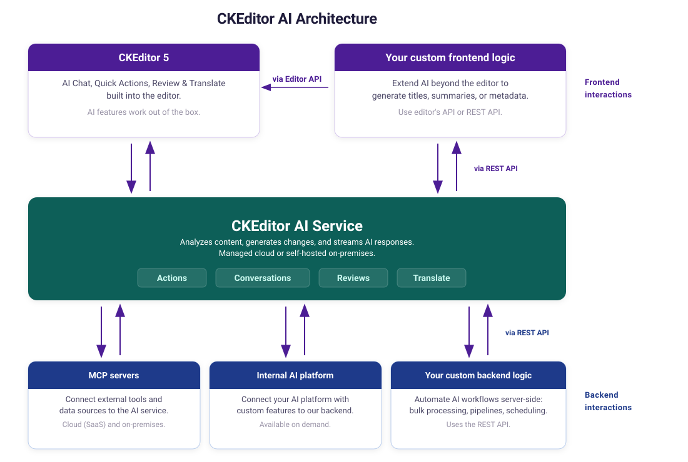

Using CKEditor AI programmatically
CKEditor AI features can be controlled entirely from code, not just through the built-in UI. This page covers two distinct approaches to using AI programmatically: the front-end editor API and the REST API.
Out of the box, CKEditor 5 communicates with the CKEditor AI Service automatically – AI Chat, Quick Actions, Review, and Translate work without any extra setup. The diagram below shows how this fits into your application and what you can build around it.

Beyond the built-in features, you can extend AI capabilities in several ways:
- Custom frontend logic: call the AI service directly using the REST API or the editor’s API to build features outside the editor UI, such as generating titles, summaries, or metadata.
- Custom backend logic: automate AI workflows server-side via the REST API for bulk processing, content pipelines, or scheduled tasks.
- MCP servers: connect external tools and data sources to the AI service via the Model Context Protocol, in both Cloud (SaaS) and on-premises deployments.
- Internal AI platform: connect your AI platform with custom features to the CKEditor AI service backend (on-premises only, available on demand). Contact us to learn more.
CKEditor AI features can be triggered programmatically via the editor instance. This is useful for building custom UI, automating workflows, or integrating AI capabilities into your application logic beyond the built-in editor toolbar.
We are actively expanding the programmatic API for CKEditor AI. Some of the APIs described below are marked as experimental – they are production-ready but may change in minor releases without the standard deprecation policy. Breaking changes will always be documented in the changelog with migration guidance. If you have a use case that is not covered here, please contact us. Your feedback helps us prioritize which APIs to expose next.
All examples below assume the editor is already set up with AI features enabled. See the integration guide for setup instructions.
The AI Chat feature can be controlled via the AIChat plugin. See the chat documentation for more details on the feature.
The demo below shows a generic sales offer for server infrastructure. Select a target company, then click the button to send a personalized rewrite request to AI Chat – all from code, without any user interaction in the chat UI. The prompt includes the company’s profile data so the AI tailors the offer accordingly.
Select a company. Pick a company profile to personalize the offer, then click the button below.
Use the sendMessage() method to programmatically send a message to AI Chat. You can dynamically construct the message based on your application state – for example, including external data like a company profile:
const aiChatController = editor.plugins.get( 'AIChatController' );
await aiChatController.sendMessage( {
message: `Rewrite this offer for ${ companyName }.\n\nCompany profile:\n${ profileData }`
} );Use the startConversation() method:
const aiChatController = editor.plugins.get( 'AIChatController' );
await aiChatController.startConversation();You can also start a conversation with a specific model by passing the modelId option:
await aiChatController.startConversation( { modelId: 'claude-5-sonnet' } );The contexts option attaches Context Library references to every message of the new conversation. They are merged with the chat entries of config.ai.defaultContext rather than replacing them:
await aiChatController.startConversation( {
contexts: [ { id: 'customer-account-notes' } ]
} );Attach the current editor selection as context for the next chat message using addSelectionToChatContext():
const aiChatController = editor.plugins.get( 'AIChatController' );
aiChatController.addSelectionToChatContext();The Document Processing API (AIDocumentProcessingGateway plugin) performs an AI-powered transformation on an entire document from a single free-form prompt – similar to sending one message to AI Chat. It is a headless API that does not involve a UI and can insert or suggest AI changes to the editor content. Like the other gateways, it can be loaded standalone, without any AI UI plugins. It also understands images embedded in the document. To build your own review experience on top of the Document Processing results, see the Editing Toolkit with CKEditor AI guide.
The demo below takes a block of raw, unstructured notes and reformats the whole document in one run – adding headings, turning the schedule and budget into tables, and grouping the rest into bulleted lists – applied as track changes suggestions you can review.
Conference Planning — Raw Notes
These are the unsorted notes from our planning call, dumped in as plain paragraphs. The opening keynote is on Monday at 9:00 AM in Hall A, which seats 400 people. The hands-on workshop runs on Monday at 11:00 AM in Room 2B with 60 seats. The networking lunch is on Monday at 1:00 PM in the Atrium and can hold 250 guests. The closing panel is on Tuesday at 3:00 PM, back in Hall A with 400 seats.
For catering we must offer vegetarian, vegan, and gluten-free options at every meal, and we need a nut-free station near the entrance. On the budget side, the venue costs 12,000 dollars, catering is 8,500 dollars, audio-visual equipment is 4,000 dollars, and speaker travel is estimated at 6,000 dollars. Outstanding action items: send the speaker invitations by Friday, confirm the audio-visual vendor next week, finalize the catering menu by the end of the month, and open attendee registration once the schedule is locked.
Each run of the Document Processing API resolves to an AIRunResult that describes the outcome of the whole run and, on success, wraps one AIDocumentProcessingRunResult per root. Once the request is dispatched, the returned promise always resolves – transport, parsing, and merge failures are reported through the result’s status ('error') and error fields rather than thrown, and aborted runs resolve with status: 'aborted'. The matching REST endpoint is described in the Document Processing endpoint section below.
A model is required for every run. Discover the available models with getAvailableModels():
const aiGateway = editor.plugins.get( 'AIGateway' );
const models = await aiGateway.models.getAvailableModels();
// [
// { id: 'agent-1', name: 'Auto', description: '...', ... },
// { id: 'gpt-5.5', name: 'GPT-5.5', description: '...', ... },
// /* ... */
// ]Run the transformation with processDocument(), passing the prompt and a model id. Apply it to the editor with applyResult() – either as track changes suggestions (applyMethod: 'suggest') or as direct changes (applyMethod: 'insert'). Using 'suggest' as the applying method requires the Track Changes plugin to be loaded in the editor. Each per-root entry in result.results also carries a summary of the changes the model made for that root:
const aiDocumentProcessingGateway = editor.plugins.get( 'AIDocumentProcessingGateway' );
const result = await aiDocumentProcessingGateway.processDocument(
'Fix grammar and spelling errors',
{ model: 'claude-5-sonnet' }
);
if ( result.status === 'completed' ) {
aiDocumentProcessingGateway.applyResult( result, { applyMethod: 'suggest' } );
}By default, processDocument() processes every non-$graveyard root across every editor in the current Context – see the Multi-root editors and multi-editor Context setups section below to restrict a run to specific roots.
The run accepts an AbortSignal, so a long-running transformation can be cancelled:
const controller = new AbortController();
const result = await aiDocumentProcessingGateway.processDocument(
'Fix grammar and spelling errors',
{ model: 'claude-5-sonnet', signal: controller.signal }
);
// Call controller.abort() elsewhere to cancel the run; the result resolves with status: 'aborted'.When AIDocumentProcessingGateway runs inside a Context that hosts multiple editors, or on a multi-root editor, processDocument() processes every non-$graveyard root across every editor by default. The returned result holds one entry per root. Each entry carries its own channelId (the editor’s collaboration.channelId), rootName, and summary:
const result = await aiDocumentProcessingGateway.processDocument(
'Fix grammar and spelling errors',
{ model: 'claude-5-sonnet' }
);
for ( const subResult of result.results ) {
console.log( subResult.channelId, subResult.rootName, subResult.status, subResult.summary );
}To restrict a run to a subset of roots, pass the roots option – its order does not affect the payload, entries are treated as a set-membership filter:
const result = await aiDocumentProcessingGateway.processDocument(
'Fix grammar and spelling errors',
{
model: 'claude-5-sonnet',
roots: [
{ channelId: 'doc-1', rootName: 'main' },
{ channelId: 'doc-2', rootName: 'sidebar' }
]
}
);An empty roots array or an entry that does not resolve to a live, non-$graveyard root throws ai-documentprocessinggateway-empty-roots / ai-documentprocessinggateway-root-not-found synchronously.
Passing the result to applyResult() applies every root’s changes. To apply only some, pass a roots filter in the options:
const result = await aiDocumentProcessingGateway.processDocument(
'Fix grammar and spelling errors',
{ model: 'claude-5-sonnet' }
);
if ( result.status === 'completed' ) {
aiDocumentProcessingGateway.applyResult( result, {
applyMethod: 'insert',
roots: [ { channelId: 'doc-1', rootName: 'main' } ]
} );
}Under the hood, applyResult() groups the entries by editor and applies each editor’s roots in a single model.change() block, so all updates to one editor produce a single undo step.
Programmatic runs can opt into extra AI capabilities per call by passing the capabilities option. The webSearch: true option lets the model retrieve information from the web while producing the transformation. The reasoning: true option enables reasoning at the service’s default level. Pass an AIReasoningLevel value instead to choose how much effort the model spends before replying. Omitting the option, or leaving both flags falsy, keeps both capabilities disabled for this call.
const aiDocumentProcessingGateway = editor.plugins.get( 'AIDocumentProcessingGateway' );
const result = await aiDocumentProcessingGateway.processDocument(
'Summarize the latest research on this topic and rewrite the introduction.',
{
model: 'claude-5-sonnet',
capabilities: {
webSearch: true,
reasoning: 'balanced'
}
}
);To have a reusable set of prompts and files shape the transformation, pass Context Library references with the contexts option:
const result = await aiDocumentProcessingGateway.processDocument(
'Rewrite this article to match our style guide.',
{
model: 'claude-5-sonnet',
contexts: [ { id: 'style-guide' } ]
}
);The AI Review feature can be controlled programmatically in two ways: by driving the same UI-based flow users interact with in the review panel, or by running reviews headless in the background.
The demo below runs a proofreading review in the background and applies the corrections as track changes suggestions shown inline – without opening the review panel.
Quarterly Team Update
Their are a few important things we wants to share with the team this quarter.
The new onboarding process have been rolled out to every department, and it are already helping new hires to get up to speed much quicker then before.
Please make sure you reviews the updated guidelines before friday. Their will be a short quiz afterward to confirm that everyone understand the changes.
Thank's for you're patience while we worked threw these updates. We could not have done it without you support.
The AIReviewMode plugin drives the full UI-based review flow from code – the programmatic equivalent of selecting a command in the review panel. The editor switches to review mode, runs the command, and presents the suggestions in the sidebar, exactly as it would for a manually triggered review.
First, discover the commands that are available in the UI with getAvailableCommands():
const aiReview = editor.plugins.get( 'AIReviewMode' );
const commands = aiReview.getAvailableCommands();
// [
// { id: 'correctness', title: '...', description: '...' },
// { id: 'tone', parameters: [ { label: 'Casual', id: 'casual' }, ... ] },
// /* ... */
// ]Then run a system command with startReview(). Parameterized commands, such as length or tone, accept a parameterId chosen from the command’s parameters list:
const aiReview = editor.plugins.get( 'AIReviewMode' );
// Run a system command.
await aiReview.startReview( 'correctness' );
// Run a parameterized command with a selected parameter.
await aiReview.startReview( 'tone', { parameterId: 'casual' } );To run the built-in custom command with your own prompt, use startCustomReview(). You can optionally pass a model – use getAvailableModels() for the list of valid model ids:
const aiReview = editor.plugins.get( 'AIReviewMode' );
// Run review with a custom prompt.
await aiReview.startCustomReview( 'Check that every list uses parallel phrasing.' );
// And with specific model.
await aiReview.startCustomReview(
'Check that every list uses parallel phrasing.',
{ model: 'claude-5-sonnet' }
);Both methods resolve once the review run is dispatched to the review panel. The command itself continues to run asynchronously, and the UI reflects its progress – stream-phase failures surface through the existing UI error views, not through the returned promise.
Both methods first make sure the UI is showing the review tab. This only becomes relevant if a different AI tab (for example AI Translate) is currently active and has an unresolved run of its own: switching away from it shows the user a confirmation dialog, and the returned promise waits for the user’s answer before proceeding. If the user confirms leaving the other tab, the switch completes and the review run starts. If the user chooses to stay instead, the review never starts and the returned promise rejects with the ai-reviewmode-review-vetoed error.
The AIReviewGateway plugin runs a review end-to-end without touching the UI. This is useful for background processing, automated content pipelines, or building a fully custom review experience. Unlike the UI flow, the gateway can be loaded standalone, without the AIReviewMode plugin.
Each run resolves to an AIRunResult that describes the outcome of the whole run and, on success, wraps one AICheckRunSingleRootResult per root. Runtime failures resolve into the result – transport and parsing failures land on result.error with result.status: 'error', aborts surface as result.status: 'aborted', and both leave result.results empty. Successful runs surface as result.status: 'completed' with one entry in result.results per root the run covered. Programmer-error inputs (unknown command, empty or bad roots, missing prompt/model for runCustomReview) throw synchronously.
Discover the available commands with getAllCommands() and the available models with getAvailableModels(). Unlike getAvailableCommands() from the UI plugin, getAllCommands() returns every command regardless of the editor configuration – commands hidden from the UI can still be run headless:
const aiReviewGateway = editor.plugins.get( 'AIReviewGateway' );
const commands = await aiReviewGateway.getAllCommands();
// [
// { id: 'correctness', title: '...', description: '...' },
// { id: 'tone', parameters: [ { label: 'Casual', id: 'casual' }, ... ] },
// /* ... */
// ]
const models = await aiReviewGateway.models.getAvailableModels();
// [
// { id: 'agent-1', name: 'Auto', description: '...', ... },
// { id: 'gpt-5.5', name: 'GPT-5.5', description: '...', ... },
// /* ... */
// ]Run a system command with runReview(), then apply the result to the editor with applyReview() – either as track-changes suggestions (applyMethod: 'suggest') or as direct changes (applyMethod: 'insert'). Using 'suggest' as the applying method requires the Track Changes plugin to be loaded in the editor (without it, the ai-no-track-changes error will be thrown):
const aiReviewGateway = editor.plugins.get( 'AIReviewGateway' );
const result = await aiReviewGateway.runReview( 'correctness' );
if ( result.status === 'completed' ) {
aiReviewGateway.applyReview( result, { applyMethod: 'suggest' } );
}Run the built-in custom command with your own prompt using runCustomReview():
const aiReviewGateway = editor.plugins.get( 'AIReviewGateway' );
const result = await aiReviewGateway.runCustomReview(
'Check that every list uses parallel phrasing.',
{ model: 'claude-5-sonnet' }
);When the AIReviewGateway runs inside a Context that hosts multiple editors, or on a multi-root editor, runReview() and runCustomReview() cover every visible root across every editor by default. The returned result holds one entry per root. Each entry carries its own channelId (the editor’s collaboration.channelId) and rootName:
const result = await aiReviewGateway.runReview( 'correctness' );
for ( const subResult of result.results ) {
console.log( subResult.channelId, subResult.rootName, subResult.status );
}To restrict a run to a subset of roots, pass the roots option — its order does not affect the payload, entries are treated as a set-membership filter:
const result = await aiReviewGateway.runReview( 'correctness', {
roots: [
{ channelId: 'doc-1', rootName: 'main' },
{ channelId: 'doc-2', rootName: 'sidebar' }
]
} );An empty roots array or an entry that does not resolve to a live, non-$graveyard root throws ai-reviewcoreediting-empty-roots / ai-reviewcoreediting-root-not-found synchronously.
Passing the result to applyReview() applies every root’s review. To apply only some, pass a roots filter in the options:
const result = await aiReviewGateway.runReview( 'correctness' );
if ( result.status === 'completed' ) {
aiReviewGateway.applyReview( result, {
applyMethod: 'insert',
roots: [ { channelId: 'doc-1', rootName: 'main' } ]
} );
}Under the hood, applyReview() groups the entries by editor and applies each editor’s roots in a single model.change() block, so all updates to one editor produce a single undo step. applyReview() also stamps the apply with aiSource: 'review' by default; pass aiSource in the options to override.
Both run methods accept an AbortSignal, so a long-running review can be cancelled:
const controller = new AbortController();
const result = await aiReviewGateway.runReview( 'clarity', { signal: controller.signal } );
// Call controller.abort() elsewhere to cancel the run; result.status resolves to 'aborted' and result.results stays empty.To have a reusable set of editorial rules or reference files shape the review, pass Context Library references with the contexts option. Both run methods accept it. Unlike the user interface flow, the gateway does not apply config.ai.defaultContext – only the references you pass are sent:
const result = await aiReviewGateway.runReview( 'correctness', {
contexts: [ { id: 'style-guide' } ]
} );The AI Translate feature can be controlled programmatically in two ways: by driving the same UI-based flow users interact with in the translate panel, or by running translations headless in the background.
The demo below translates the content to Spanish in the background and applies it directly to the content – without opening the translate panel.
Introducing the Atlas Desk Lamp
We are excited to announce the Atlas Desk Lamp — a minimalist lamp designed for long working sessions. Its warm, flicker-free light reduces eye strain, and the adjustable arm keeps the light exactly where you need it.
- Brightness: 1,200 lumens with stepless dimming
- Color temperature: 2,700–5,000 K
- Materials: Anodized aluminum and walnut
The Atlas Desk Lamp ships worldwide starting next month. Preorders open this Friday.
The AITranslate plugin drives the full UI-based translation flow from code – the programmatic equivalent of selecting a language in the translate panel. The editor switches to the translate mode, runs the translation, and presents the result in the sidebar, exactly as it would for a manually triggered translation.
First, discover the languages that are available in the UI with getAvailableLanguages():
const aiTranslate = editor.plugins.get( 'AITranslate' );
const languages = aiTranslate.getAvailableLanguages();
// [
// { id: 'english', label: 'English' },
// { id: 'spanish', label: 'Spanish' },
// { id: 'german', label: 'German' },
// /* ... */
// ]Then start a translation with startTranslate(), passing the id of one of the available languages:
const aiTranslate = editor.plugins.get( 'AITranslate' );
// Run a translation.
await aiTranslate.startTranslate( 'spanish' );The method resolves once the translation run is dispatched to the translate panel. The translation itself continues to run asynchronously, and the UI reflects its progress – stream-phase failures surface through the existing UI error views, not through the returned promise.
startTranslate() first makes sure the UI is showing the translate tab. This only becomes relevant if a different AI tab (for example AI Review) is currently active and has an unresolved run of its own: switching away from it shows the user a confirmation dialog, and the returned promise waits for the user’s answer before proceeding. If the user confirms leaving the other tab, the switch completes and the translation starts. If the user chooses to stay instead, the translation never starts and the returned promise rejects with the ai-translate-translation-vetoed error.
The AITranslateGateway plugin runs a translation end-to-end without touching the UI. This is useful for background processing, automated content pipelines, or building a fully custom translation experience. Unlike the UI flow, the gateway can be loaded standalone, without the AITranslate plugin.
Each run resolves to an AIRunResult that describes the outcome of the whole run and, on success, wraps one AICheckRunSingleRootResult per root. The returned promise always resolves – transport and parsing failures land on result.error with result.status: 'error', aborts surface as result.status: 'aborted', and both leave result.results empty. Successful runs surface as result.status: 'completed' with one entry in result.results per root the run covered.
The gateway is not limited to a predefined list of languages. You pass the target language straight to runTranslate() and it is forwarded to the translate endpoint as-is. See the supported languages section for the languages the feature can translate into.
Apply the result to the editor with applyTranslate() – either as track changes suggestions (applyMethod: 'suggest') or as direct changes (applyMethod: 'insert'). Using 'suggest' as the applying method requires the Track Changes plugin to be loaded in the editor (without it, the ai-no-track-changes error will be thrown):
const aiTranslateGateway = editor.plugins.get( 'AITranslateGateway' );
const result = await aiTranslateGateway.runTranslate( 'spanish' );
if ( result.status === 'completed' ) {
aiTranslateGateway.applyTranslate( result, { applyMethod: 'suggest' } );
}When the AITranslateGateway runs inside a Context that hosts multiple editors, or on a multi-root editor, runTranslate() covers every visible root across every editor by default. The returned result holds one entry per root. Each entry carries its own channelId (the editor’s collaboration.channelId) and rootName:
const result = await aiTranslateGateway.runTranslate( 'spanish' );
for ( const subResult of result.results ) {
console.log( subResult.channelId, subResult.rootName, subResult.status );
}To restrict a run to a subset of roots, pass the roots option — its order does not affect the payload, entries are treated as a set-membership filter:
const result = await aiTranslateGateway.runTranslate( 'spanish', {
roots: [
{ channelId: 'doc-1', rootName: 'main' },
{ channelId: 'doc-2', rootName: 'sidebar' }
]
} );An empty roots array or an entry that does not resolve to a live, non-$graveyard root throws ai-reviewcoreediting-empty-roots / ai-reviewcoreediting-root-not-found synchronously.
Passing the result to applyTranslate() applies every root’s translation. To apply only some, pass a roots filter in the options:
const result = await aiTranslateGateway.runTranslate( 'spanish' );
if ( result.status === 'completed' ) {
aiTranslateGateway.applyTranslate( result, {
applyMethod: 'insert',
roots: [ { channelId: 'doc-1', rootName: 'main' } ]
} );
}Under the hood, applyTranslate() groups the entries by editor and applies each editor’s roots in a single model.change() block, so all updates to one editor produce single undo step.
The run method accepts an AbortSignal, so a long-running translation can be cancelled:
const controller = new AbortController();
const result = await aiTranslateGateway.runTranslate( 'spanish', { signal: controller.signal } );
// Call controller.abort() elsewhere to cancel the run. `result.status` resolves to `'aborted'` and `result.results` stays empty.To have an approved terminology glossary shape the translation, pass Context Library references with the contexts option. Unlike the user interface flow, the gateway does not apply config.ai.defaultContext – only the references you pass are sent:
const result = await aiTranslateGateway.runTranslate( 'german', {
contexts: [ { id: 'glossary-de' } ]
} );The Quick Actions feature lets you trigger predefined AI actions programmatically via the AIActions plugin. See the quick actions documentation for the full list of available actions and configuration options.
The demo below shows a payment reminder email with hardcoded customer data. The editor is configured with merge fields for customer name, amount, due date, and other placeholders. Click the button to run a custom AI action that automatically replaces the hardcoded values with the appropriate merge field placeholders – built from the editor’s merge fields configuration.
Dear Sarah Johnson,
This is a friendly reminder that your upcoming payment of $2,400.00 is due on April 15, 2026.
Please ensure the funds are available in your account ending in 4821 before the due date to avoid any late fees. If you have already made this payment, please disregard this notice.
Here is a summary of your payment details:
- Amount due: $2,400.00
- Due date: April 15, 2026
- Account: ****4821
- Payment plan: Premium Monthly
If you have any questions or need to adjust your payment schedule, please don't hesitate to reach out to our billing team.
Best regards,
Billing Department
Quick actions operate on the current editor selection. If the selection is collapsed (no text is selected), the action automatically expands to the nearest block element.
Use the executeAction() method to run system actions or fully custom prompts:
const aiActions = editor.plugins.get( 'AIActions' );
// Run a system action.
await aiActions.executeAction(
{ actionName: 'improve-writing' },
'Improve writing'
);
// Or run a custom prompt (model is required for custom actions).
await aiActions.executeAction(
{ userMessage: 'Rewrite the selected text as a haiku', model: 'agent-1' },
'Make it a haiku'
);The available system actionName values are defined by the AIActionsNames.
The action definition also accepts contexts, a list of Context Library references attached to the request. Only the references you pass are sent:
await aiActions.executeAction(
{ actionName: 'improve-writing', contexts: [ { id: 'style-guide' } ] },
'Improve writing'
);The same AI service that powers the editor features is also available as a REST API. You can call it from your frontend – using the editor’s authentication token – to build AI-powered features around the editor. This is especially useful for scenarios where you need AI capabilities outside the editor content area, such as auto-generating a title or meta description in separate form fields based on the editor content.
The demo below shows a form with a title and meta description field above the editor. Click the button to generate both fields from the editor content using the AI REST API.
Large language models have gone from a niche research topic to one of the most talked-about technologies in the world in just a few short years. What started as experiments in predicting the next word in a sentence has evolved into systems that can draft emails, summarize documents, write code, and even hold extended conversations.
From Research to Product
The journey began with transformer architectures introduced in 2017. Early models like GPT-2 demonstrated surprising fluency but were considered too unpredictable for production use. It wasn't until the release of larger, more refined models that businesses started to take notice. Today, language models are embedded in products used by millions of people every single day.
Challenges Ahead
Despite the rapid progress, significant challenges remain. Hallucinations — cases where models generate plausible but incorrect information — continue to be a concern. Energy consumption for training and running these models is substantial. Questions around bias, copyright, and data privacy are still being actively debated.
The next frontier likely involves making these models more efficient, more accurate, and better integrated into existing workflows rather than building ever-larger systems.
The AI REST API (https://ai.cke-cs.com) exposes endpoints you can call from both frontend and backend applications.
- Actions – Stateless, single-purpose content transforms. Use these for operations like fixing grammar, improving writing, translating short sections, adjusting length or tone, or running custom prompts against content.
- Conversations – Multi-turn chat with conversation history, file uploads, and web search capabilities.
- Reviews – Document analysis for grammar, clarity, readability, and tone, returning specific suggestions for improvement. Also supports full-document translation, ensuring all text is translated even in longer content.
- Document Processing – Whole-document transformations driven by a free-form prompt. Returns the modified document and a summary of changes as a synchronous JSON response, or as a stream of Server-Sent Events from
/v1/documents/process/stream. A synchronous request can take up to 10 minutes, so set your client timeout accordingly. See Synchronous and streaming requests. Designed for server-side workflows like CMS publish hooks, content pipelines, document personalization, and batch-style processing where you call the endpoint once per document.
The Document Processing feature is experimental – it is production-ready but may change in minor releases without the standard deprecation policy. Breaking changes will always be documented in the changelog with migration guidance.
AI generation endpoints, such as Actions calls and Conversation message calls, return Server-Sent Events (SSE) streams. This means you cannot simply await response.json() for these responses – instead, you need to read the response stream and parse the individual events. Other REST API endpoints, such as the models endpoint or the Document Processing endpoint, return regular JSON responses.
The following example shows how to call the AI Actions API from the browser and collect the streamed result:
// Get the editor content.
const html = editor.getData();
// Get the auth token from the editor's token provider.
const token = editor.plugins.get( 'CloudServices' ).token.value;
// Call the AI Actions API (system action: improve-writing).
const response = await fetch( 'https://ai.cke-cs.com/v1/actions/system/improve-writing/calls', {
method: 'POST',
headers: {
'Content-Type': 'application/json',
'Authorization': `Bearer ${ token }`
},
body: JSON.stringify( {
content: [
{
type: 'text',
content: html
}
]
} )
} );
// Read the SSE stream.
// Each SSE message has an "event:" line (e.g. "text-delta") and a "data:" line with JSON.
const reader = response.body.getReader();
const decoder = new TextDecoder();
let result = '';
let currentEvent = '';
while ( true ) {
const { done, value } = await reader.read();
if ( done ) {
break;
}
const chunk = decoder.decode( value, { stream: true } );
for ( const line of chunk.split( '\n' ) ) {
if ( line.startsWith( 'event: ' ) ) {
currentEvent = line.slice( 7 ).trim();
} else if ( line.startsWith( 'data: ' ) && currentEvent === 'text-delta' ) {
const data = JSON.parse( line.slice( 6 ) );
result += data.textDelta;
}
}
}The example above is simplified for clarity. In production, handle errors, authentication token refresh, and edge cases in SSE parsing (such as events split across chunks).
The Document Processing endpoint returns a standard JSON response so no stream parsing is needed:
// Get the editor content.
const html = editor.getData();
// Get the auth token from the editor's token provider.
const token = editor.plugins.get( 'CloudServices' ).token.value;
const response = await fetch( 'https://ai.cke-cs.com/v1/documents/process', {
method: 'POST',
headers: {
'Content-Type': 'application/json',
'Authorization': `Bearer ${ token }`
},
body: JSON.stringify( {
content: [{
type: 'document',
content: html,
}],
prompt: 'Fix grammar and spelling errors',
model: 'agent-1'
} )
} );
// The response holds one entry per document sent in `content`.
const { documents: [ result ] } = await response.json();
// result.document is the processed HTML, result.summary describes the changes.For the complete API reference, including all available endpoints, request and response formats, streaming, and authentication details, see the AI REST API documentation.
The Server-side Editor API lets you execute CKEditor 5 JavaScript code on the server through the evaluate-script REST endpoint, giving you the full editor API without a browser.
Because the editor and its AI plugins run server-side, you drive AI with the same front-end editor API you would use in the browser – the AI gateways covered above – but headless and against a live collaboration document. Results are written straight into the document model as real suggestions or direct changes and sync to everyone editing it.
By default, the Server-side Editor API has no access to AI services. To run the AI gateways server-side, the request must include a user token with AI permissions. See Working with AI services for details.
- Edit documents that are open for collaboration – Apply an AI transformation to a document while users have it open, and the change shows up for all of them in real time, with no manual reload.
- Let reviewers approve AI edits – Write AI output back as track changes suggestions instead of overwriting the content, so a person accepts or rejects every change.
- Run AI from back-end events – Drive reviews, translations, or rewrites from publish hooks, scheduled jobs, CMS save actions, or even your own AI workflows, with no editor instance on screen.
- Transform documents in bulk – Apply one AI operation across many documents in a batch, such as translating an entire knowledge base or aligning the tone of every article.
Because the editor and its AI plugins run server-side, the whole workflow runs through evaluate-script against a document in a collaboration session:
- Get the gateway – Read the AI plugin you need from the running editor, for example
editor.plugins.get( 'AIDocumentProcessingGateway' ). - Run the AI – Call its programmatic API, such as
processDocument()with a prompt, exactly as you would in the browser. - Apply the result – Write the changes back with the gateway, either as direct content or as track changes suggestions for later review.
The suggestions land in the live document and sync to everyone editing it – no browser required.
For detailed setup instructions and the API reference, see the Server-side Editor API documentation.